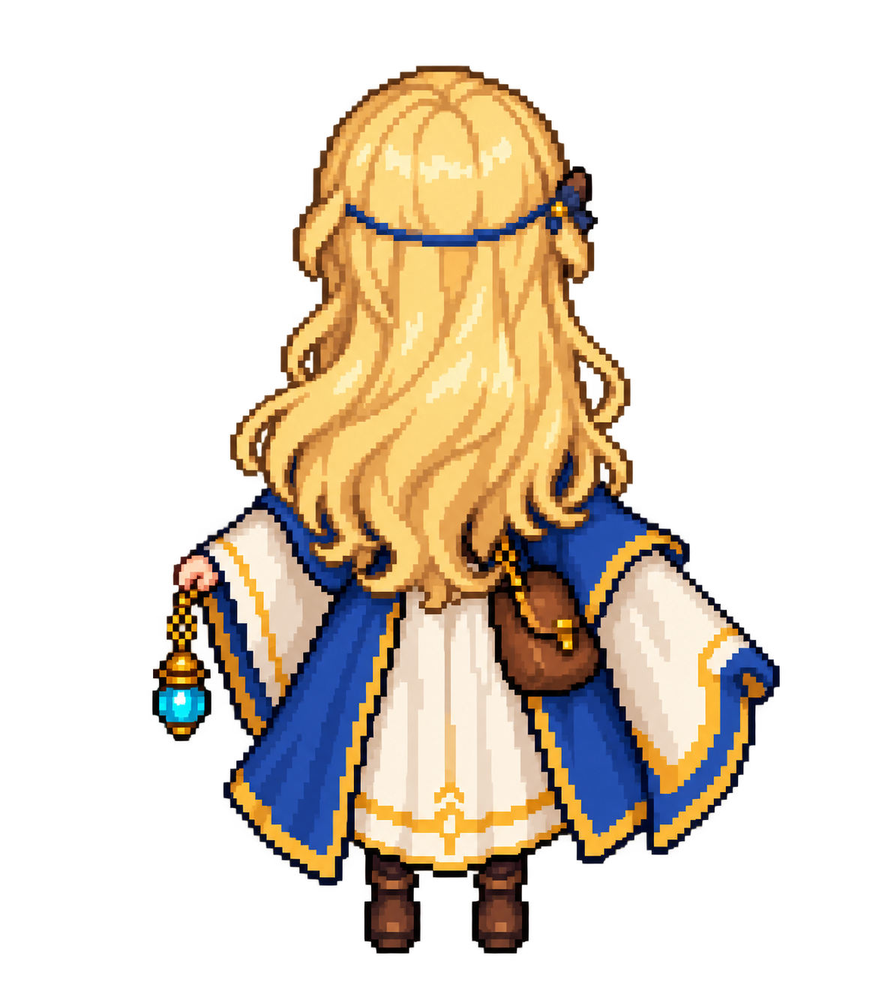
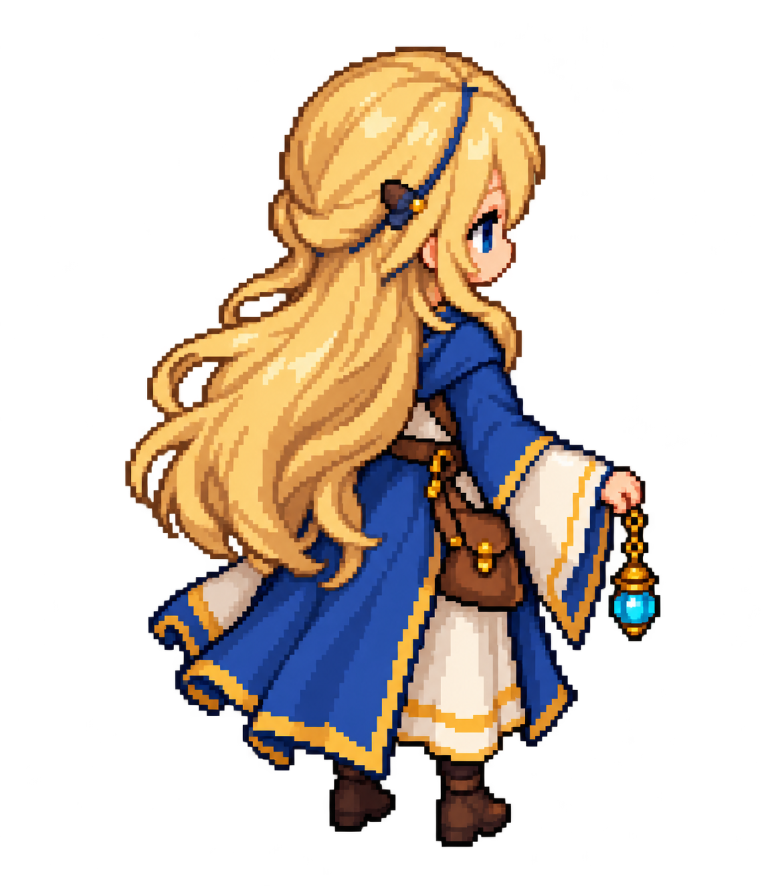
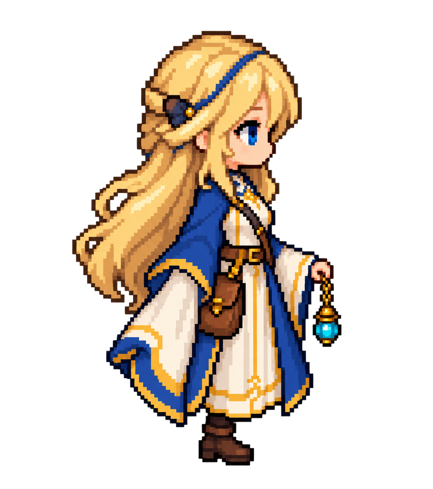
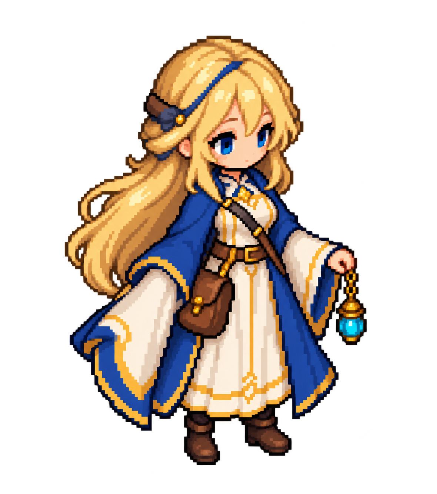
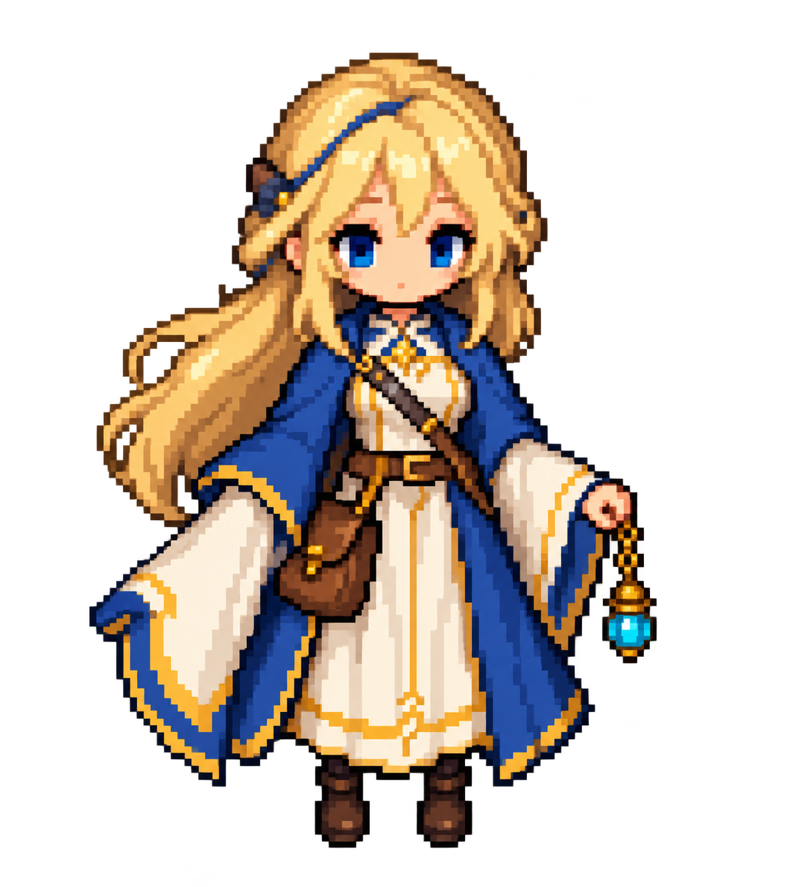
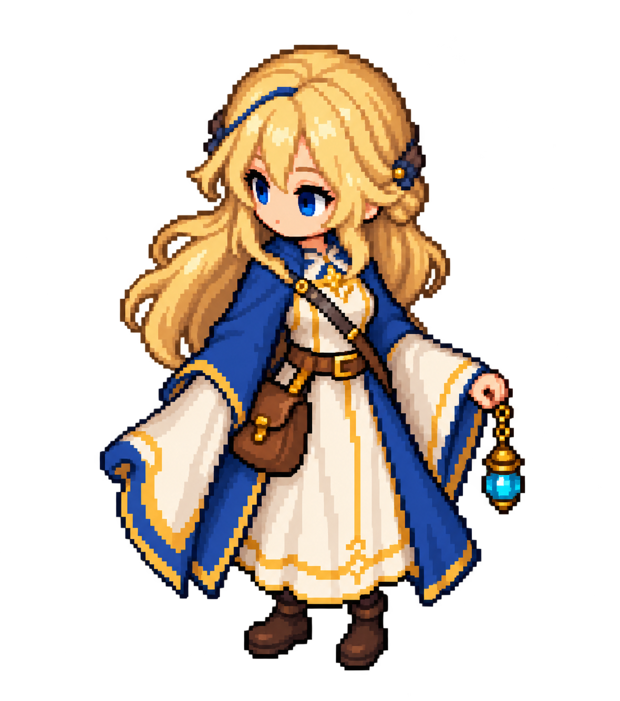
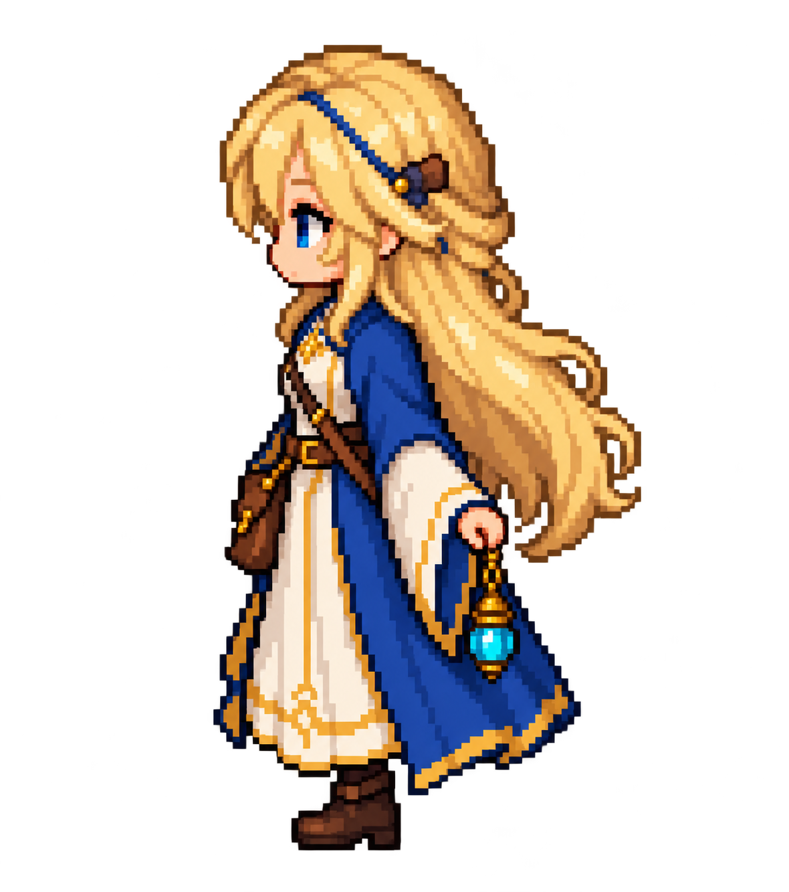
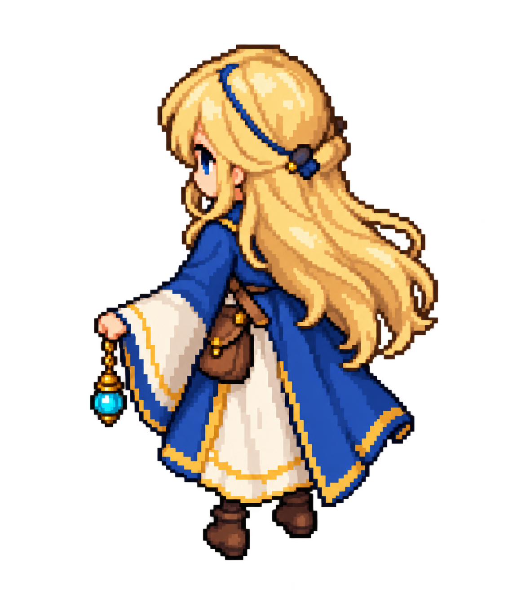

Blonde heroine · blue and gold mantle · ivory bell sleeves · leather pouch · turquoise charm.Full-body idle references for later sprite drawing. Directions describe where the character faces on screen.







